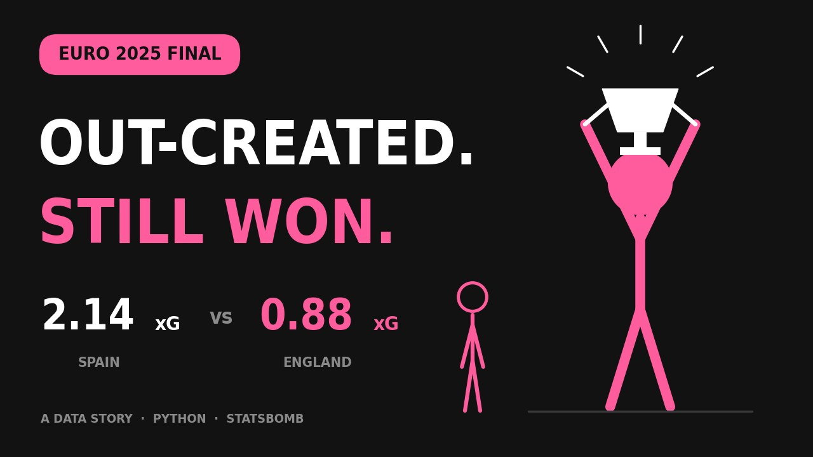
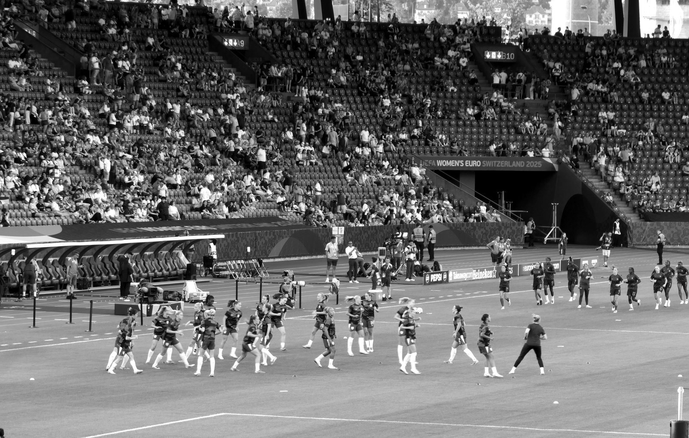
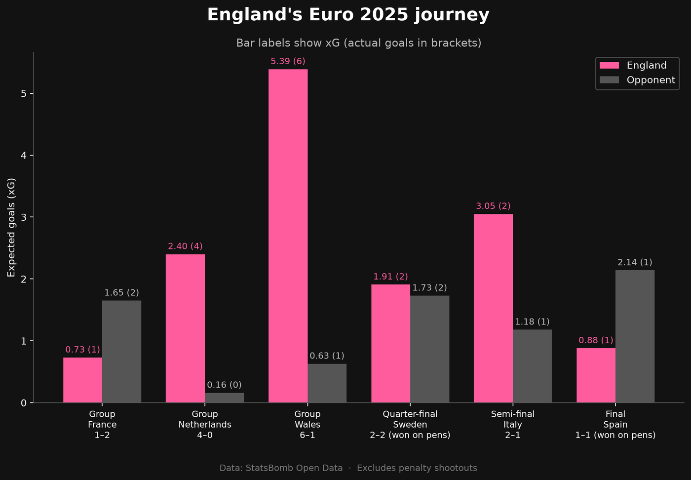
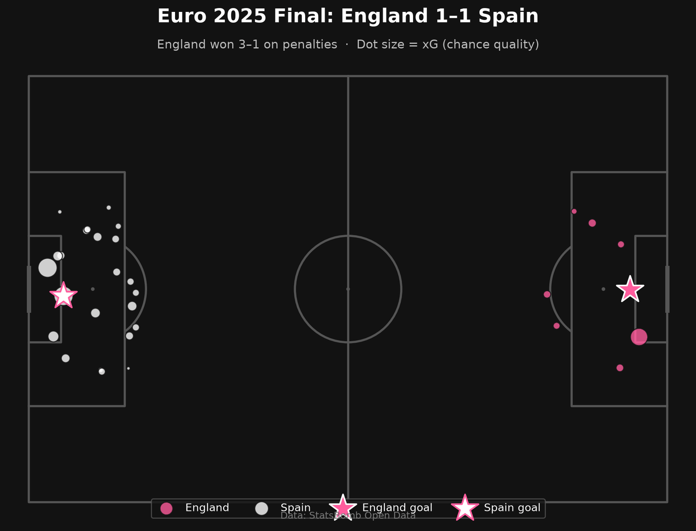
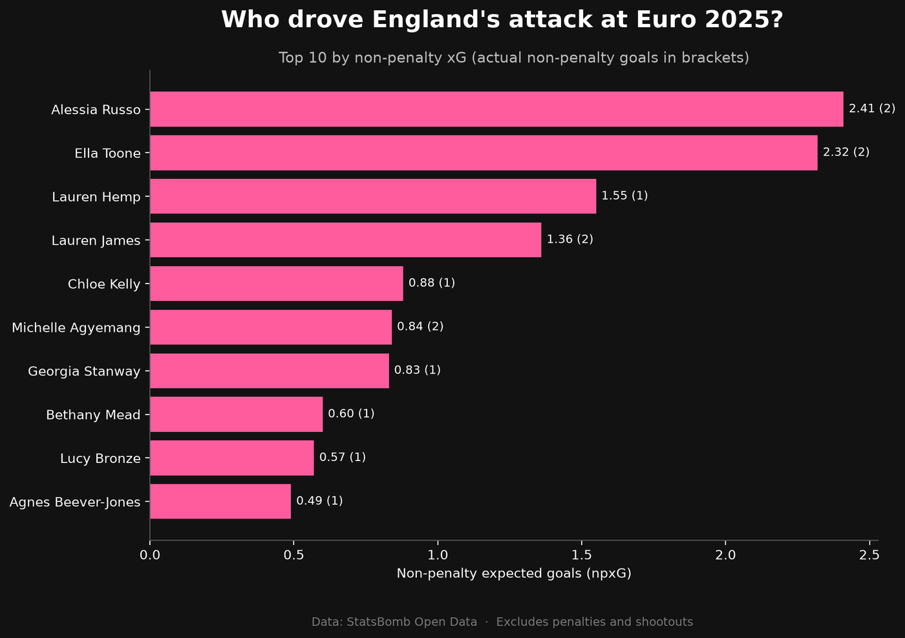
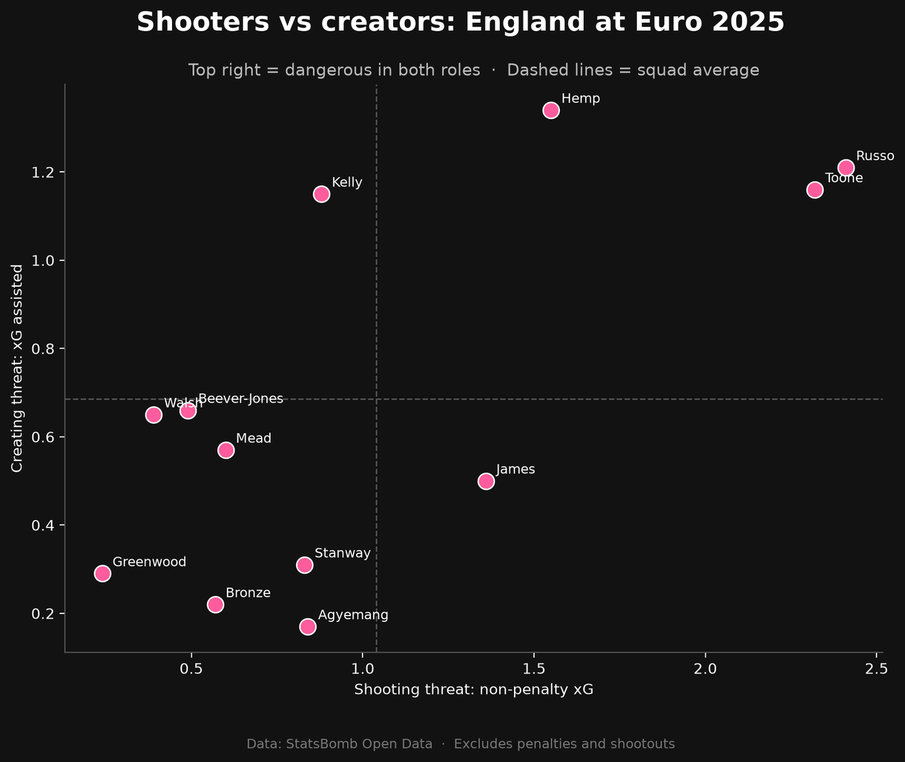
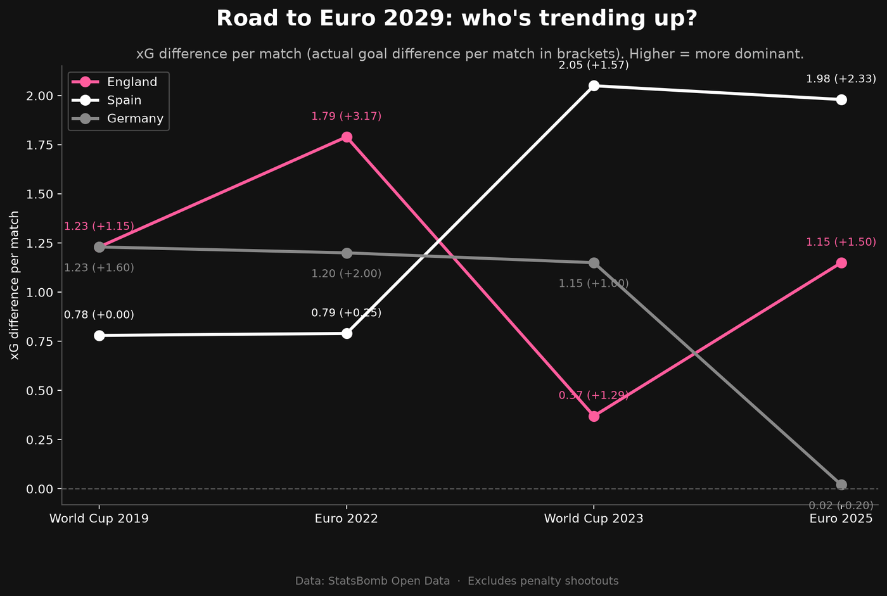
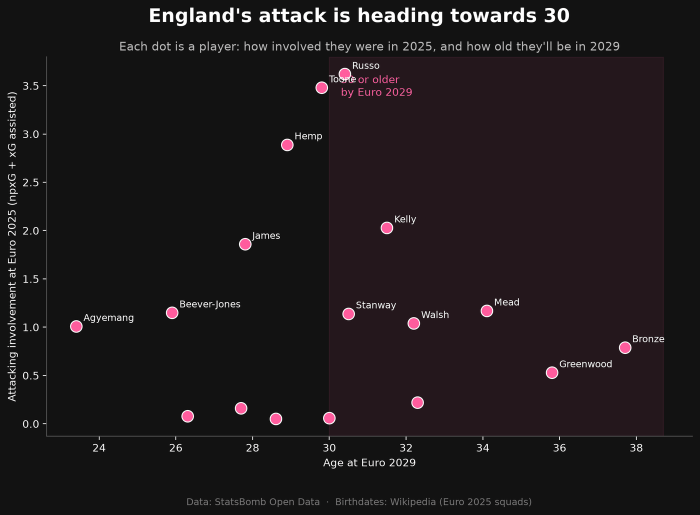

Lionesses Euro 2025
Spain created more than twice England's chances in the Euro 2025 final. England still lifted the trophy. I wanted to know how, and whether they can make it three in a row in 2029.
- Role
- Analysis, design, build and video
- Built over
- 8 sessions, logged below
- Data
- StatsBomb Open Data, four tournaments
- Tools
- Python, pandas, mplsoccer, matplotlib, Streamlit

The data story: a 46-second animated breakdown, with an original beat. Both made from scratch.
The question
Men's football is one of the most analysed sports in the world, but the women's game gets a fraction of that attention. I wanted my first big data project to change that in a small way, and to bring my two worlds together: real analysis, told like a story.
Before writing any code, I set five questions to keep the project focused:
- How did England's attacking threat change match by match?
- Did England deserve their results?
- Who drove England's attack?
- How did England defend?
- What does the data suggest about England's chances of a third straight title at Euro 2029 in Germany?

What the data says
Every shot, pass and tackle from England's six matches, 22,853 events in all, plus every shot from England, Spain and Germany across four tournaments. Click any chart to open it full size.






The dashboard
I turned the analysis into an interactive Streamlit app, so anyone can explore it without touching code. It has four tabs:
- Tournament overview
- England's chances created and goals scored in all six matches.
- Match explorer
- Pick any England match to see its key stats and shot map.
- Player view
- Who drove the attack, with a sortable table of every player's stats.
- Looking ahead to 2029
- England against Spain and Germany over time, and how the squad is ageing.
Development log
I went from printing “hello world” to a live dashboard, and wrote up every session as I went: what I did, what I learned, and what confused me. Open any session to read it.
-
01 Setting up and loading real data Set up my workspace and load real football data into Python for the first time.
What I did
Created a project folder, set up a virtual environment, installed the libraries I need, opened a Jupyter notebook, and loaded StatsBomb's list of competitions, then filtered it to women's competitions only.
What I learned
- Virtual environment: Where project tools are stored and accessed
- DataFrame: A snapshot table of data with rows and columns that can be worked with using code (i.e. code can be used to filter the data)
What confused me
How did StatsBomb manage to pull such data?
Mostly by people, trained analysts who log the data by hand.Why is Jupyter Notebook a separate webpage and what is the purpose of this?
It's a local file that can be accessed as a viewing screen on the browser; its purpose is so you can run code in small pieces and see the result immediately with notes to help explore and experiment so once you know what you want, you can write the final piece as a normal Python code in an editor like VS Code.Next timePut the project on GitHub and load my first full match.
-
02 Exploring a full match Load a full match from Euro 2025 and explore its event data.
What I did
Loaded all 31 matches from Women's Euro 2025, filtered them to England's six games, loaded every event from the final against Spain (4,830 events), explored the event types, and tested a theory about the goals.
What I learned
- Why I chose Euro 2025: It's the most recent women's data StatsBomb has released for free. The WSL 2023/24 season has more matches per team, but Euro 2025 is newer and includes high-profile games like England's win in the final.
- value_counts(): It counts how many times each value appears in a column and sorts them from most to least common. It's a quick way to get a feel for a new dataset, like seeing which event types happen most in a match.
- & and |: When filtering, & means "and" (both conditions must be true) and | means "or" (either condition can be true). Each condition needs its own brackets.
- xG: Expected goals is an estimate of how likely a shot is to become a goal, from 0 to 1, based on things like where it was taken from. A penalty is around 0.78, while a long-range shot might be 0.02.
- Testing a theory: I thought the only real match goals were Caldentey's and Russo's, and the other goals in the data were shootout penalties. I checked by filtering shots to period 5 (the shootout), which showed England winning 3–1, then filtering goals from before the shootout, which showed exactly two: Caldentey and Russo.
What confused me
- Understanding xG. Resolved: xG is roughly how many times out of 100 a shot like that would go in. It measures the quality of chances, not just the result.
- The difference between & and | when filtering. Partly resolved: & narrows results (every condition must be true), | widens them (only one needs to be true). A quick way to remember it: & is picky, | is generous. Still getting comfortable with this, so I'll keep practising.
Things I noticed in the data
- The score columns don't include penalty shootouts, so the final shows 1–1.
- Team names are inconsistent ("England Women's" vs "Wales W").
- StatsBomb minutes are elapsed time, so the 25th-minute goal shows as 24.
Next timePlot every shot from the final on a football pitch using mplsoccer.
-
03 My first visualisation: the shot map Create my first visualisation: a shot map of the Euro 2025 final.
What I did
Started a new notebook, filtered the final's shots (excluding the penalty shootout), split each shot's location into x and y coordinates, flipped Spain's shots to the opposite end, and built a styled shot map sized by xG with goals shown as stars. Then compared both teams' xG with groupby and tested who shot from inside the box.
What I learned
- Coordinates: StatsBomb's pitch is 120 x 80, and every team attacks left to right. To show both teams, I flipped one by subtracting from 120 and 80, like rotating the pitch 180 degrees.
- mplsoccer: Pitch() draws the pitch, and pitch.scatter() places dots on it. fig is the whole canvas, ax is the area the pitch is drawn on.
- Styling: hex codes set colours, alpha makes dots see-through, zorder controls layering (like track order in an edit), and comments starting with # label sections of code.
- groupby: splits data into groups and calculates something for each one, like a pivot table in Excel.
What confused me
- A NameError when drawing the chart. Resolved: the cells creating england_shots hadn't been run. NameError means something hasn't been created yet. Run All Cells runs everything in order.
- Why every shot appeared at the same goal on my first attempt. Resolved: StatsBomb records both teams attacking the same direction, so one team needs flipping.
Things I noticed in the data
- Spain dominated volume: 23 shots and 2.14 xG, against England's 8 shots and 0.88 xG.
- But shot quality was similar: England's average xG per shot was slightly higher (0.11 vs 0.09), and both teams took about 75% of shots inside the box.
- So Spain's advantage came from volume, not better positions. My first impression from the chart was only half right, which shows why visuals should be checked against numbers.
- England matched their xG; Spain scored once from over two goals' worth of chances.
- Caveat: this is one match, so it's a small sample.
Next timeAdd the shot map to my README, then decide the dashboard's wider focus.
-
04 England's whole tournament Analyse England's whole Euro 2025 tournament and build the dashboard's tournament overview chart.
What I did
Wrote five guiding questions for the dashboard, including a future-facing one about Euro 2029 in Germany. Loaded all six of England's matches at once with a for loop (22,853 events), summarised shots, xG and goals for every team in every match, reshaped it into one row per match, and built a styled chart of England's journey with xG and goals labelled.
What I learned
- Guiding questions: writing down what I want to find out before coding keeps the project focused.
- For loops: repeat the same steps for each item in a list, like loading six matches without copying code six times. Indentation shows which lines are inside the loop.
- pd.concat: stacks tables on top of each other, like joining clips on a timeline.
- merge: joins two tables on a shared column, like a SQL JOIN.
- ~ means "not" when filtering.
- f-strings: build text with values slotted in, like "0.73 (1)".
- True counts as 1 when adding up, which makes counting goals easy.
What confused me
- A cell showed nothing when I ran it. Resolved: cells that only create variables don't display anything. Adding a display line or print() confirms it worked.
Things I noticed in the data
- Combining matches increased the columns from 88 to 108, because concat keeps every column from every match.
- England's story: out-created by France in a 2–1 opening defeat, dominant against the Netherlands and Wales, level on chances with Sweden, much stronger than Italy but needing extra time, then out-created by Spain in the final but winning on penalties.
- England's 16 goals matched their real tournament total, a good sanity check.
Next timeSession 5, the player view: who drove England's attack?
-
05 Who drove England's attack? Answer "Who drove England's attack?" with a player-level analysis.
What I did
Summarised every England player's shots, xG and goals, tested a theory about Chloe Kelly's penalty, recalculated everything without penalties (npxG), traced shots back to the passes that created them (xG assisted), and built two charts: top 10 by npxG, and a shooters vs creators scatter plot.
What I learned
- Functions: a reusable block of code with def and return, like saving an effects preset.
- npxG: removing penalties gives a fairer comparison of open-play threat.
- Key passes and xG assisted: the pass before a shot, and the value of the chances a player created.
- dropna removes missing values; fillna fills them in.
- join with how="outer" keeps players who appear in either table.
- != means "not equal to".
What confused me
- How the shooters vs creators chart works. Resolved: each dot is a player. Further right means she took more good shots, higher up means she set up more good shots for others. The dashed lines are the team average, splitting the chart into four boxes: shooters, providers, players who do both, and players who help now and then.
Things I noticed in the data
- Kelly's saved penalty against Italy made her look wasteful. Without it, she finished slightly above expectations.
- One of Stanway's two goals was a penalty, halving her xG once removed.
- Russo led England in both shooting threat and assists: a complete forward.
- Hemp created the most xG for others but got no assists, and underperformed as a shooter, so she was the unluckiest attacker.
- Agyemang scored 2 goals from 0.84 xG as a super-sub, but from only 6 shots, so it's a small sample.
Next timeSession 6: turn the notebooks into an interactive Streamlit dashboard with three sections: a tournament overview (England's journey chart), a match explorer (pick any of England's six matches to see its shot map), and a player view (top 10 and shooters vs creators charts).
-
06 Building the dashboard Turn my notebook analysis into an interactive Streamlit dashboard.
What I did
Built app.py with three tabs: a tournament overview (England's journey chart), a match explorer (a dropdown to pick any of England's six matches, with a stats strip and shot map), and a player view (top 10 chart, shooters vs creators scatter, and a sortable stats table). Moved my notebook code into functions and cached the data.
What I learned
- A Streamlit app is a Python file that reruns top to bottom every time someone clicks something.
- Caching (@st.cache_data) remembers the data after the first load, so the app stays fast.
- Decorators: the @ line above a function gives it an extra power.
- Colour constants (PINK, DARK, GREY) store my palette in one place.
- Streamlit building blocks: st.tabs, st.selectbox, st.columns, st.metric, st.pyplot and st.dataframe.
- .iloc[0] picks a row by position.
What confused me
- How Streamlit works, and why use it instead of Power BI. Resolved: Streamlit turns a Python file into a web page, rerunning the file whenever someone clicks something. Power BI is drag-and-drop and great for business reporting, but Streamlit can show anything Python can make, like pitch maps and ML models, using the same code as my analysis. Many teams use both, choosing the right tool for the job.
Next timeSession 7: Looking ahead to Euro 2029.
-
07 Looking ahead to Euro 2029 Answer question 5: what does the data suggest about England's chances of a third straight Euros title at Euro 2029 in Germany?
What I did
Downloaded every open-play shot from England, Spain and Germany's matches across four tournaments (World Cup 2019 to Euro 2025) and saved them to a CSV. Compared each team's xG difference per match over time. Added a second data source (birthdates from Wikipedia) to work out England players' ages at Euro 2029. Built a trend chart and an age chart, and added a fourth "Looking ahead to 2029" tab to the dashboard.
What I learned
- Dictionaries store pairs of keys and values, like tournament names and IDs.
- Loops inside loops: going through each tournament, then each match inside it.
- Saving data to CSV means downloading once and loading instantly after.
- transform("sum") gives each row its group's total, which let me work out xG against.
- Categorical ordering keeps tournaments in time order, not alphabetical.
- Combining two data sources by matching names, and checking none are missing with sets.
- np.where works like an IF formula in Excel.
- Indentation errors: pasting with the cursor on an indented line can push code into the wrong place.
Open question
- What will England do now that their attack is ageing? The data shows the problem but can't answer it yet. Possible answers: younger squad players like Lauren James, Aggie Beever-Jones and Michelle Agyemang stepping up, or new players coming through the WSL. Future idea: use StatsBomb's WSL 2023/24 data to find young English players performing well at club level, like a scouting tool.
Things I noticed in the data
- Spain went from 0.78 to around 2.0 xG difference per match: the team on the rise.
- England have allowed more chances at every tournament since 2019, but consistently score more than their xG.
- Germany dropped from around 1.2 to 0.02 at Euro 2025.
- 9 of England's 17 attacking contributors will be 30+ by 2029, making up 49.8% of their attacking involvement. Toone is just under the line, so the result is sensitive to the threshold.
- Caveats: short trend, different opponents at World Cups and Euros, small samples, and an assumed tournament date.
Next timeSession 8: publish the dashboard online, polish the README, and record a demo video.
-
08 Launch Launch the project: publish the dashboard online, polish the README, and create a demo video.
What I did
Deployed the dashboard to Streamlit Community Cloud at lionesses-euro2025.streamlit.app. Rebuilt the README around five key findings, with methods and limitations. Created a 46-second animated data story (pink stick figures, an original beat, and a breakdown of how England won), plus a thumbnail. Set up my YouTube channel, Data with Georgia Jayy (@datawithgeorgiajayy), with a banner, watermark, description and a Football Data Stories playlist, and published the video. Renamed the repo to lionesses-euro2025, added a licensed photo, and updated my GitHub profile and portfolio site with the finished project.
What I learned
- Deployment: an online server installs whatever is in requirements.txt. pip freeze on Windows includes Windows-only packages that break on the Linux server, so I trimmed it to just the six libraries the app uses.
- Free hosting sleeps apps after a while, so I should open the link before sharing it.
- Copyright: press photos usually belong to agencies like Getty, so I swapped mine for a Creative Commons photo. CC BY-SA 4.0 means crediting the photographer, linking the licence and saying if I changed it (I converted it to black and white).
- Renaming a repo: GitHub redirects the old address, but I still had to point my laptop at it with git remote set-url and update links everywhere.
- Presenting work: the first two lines of a description or post are the hook, and a thumbnail needs a few big words, not a paragraph.
- Accuracy matters in how I describe my work, like not claiming WSL data or passing networks the dashboard doesn't have yet.
What confused me
- Finding images I'm actually allowed to use for design purposes, since most photos online belong to agencies like Getty. Resolved: Wikimedia Commons is a library of freely licensed images, a new tool for me. Each photo lists its licence, and CC BY-SA 4.0 lets me use and edit it as long as I credit the photographer, link the licence and say what I changed.
Things I noticed
- My media production skills made the launch the most fun part: the video, thumbnail and branding all share one pink and black identity.
- Checking the real output matters. The first video export had a white background that hid all the text, which only showed up when checking the actual file.
Next timeStart the next projects.
This is my devlog as written during the build. The original lives in the project repository.
Looking back
The most valuable moments came from the data correcting me. My first read of the final's shot map was that Spain had better chances; the numbers showed they simply had more of them. Checking visuals against numbers is now a habit.
The analysis has honest limits: four tournaments is a short trend, some samples are small, and it describes what happened rather than predicting what will. Next, I'd like to use WSL data to find young English players performing well at club level, and build my own expected goals model.